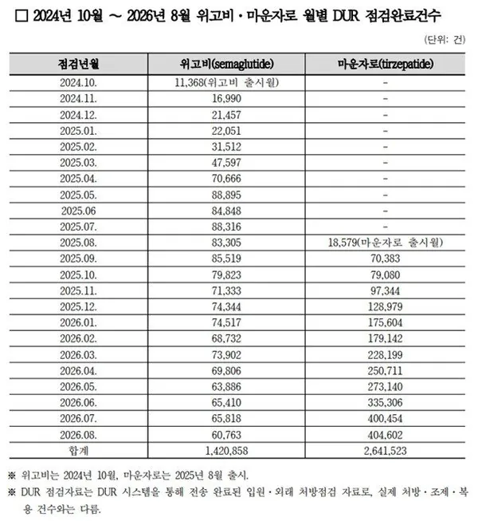

현재, 마운자로 위고비는 매달 맞는 인구수가 가파르게 늘어나고 있음
현재 보건복지부는 DUR제도로 위고비,마운자로 처방건수를 분석하고 있는데 8월에만 마운자로 40만명, 위고비 6만명 처방받았다고 함.
이 46만명은 매달 처방전 받는 인구수가 이정도라는 뜻임
계속 가파르게 올라가고 있으므로 지금은 이미 50만명 넘었다고 보는게 합리적임
참고로 위고비, 마운자로의 대부분은 2~30대가 맞는다고 함. 아무래도 나이가 들수록 미용관리는 덜하는 경향이 있고, 고도비만이면 40대까지도 가지 못하는 경우가 많다보니...
2~30대의 대한민국 인구수가 1200만명이므로, 대략 주변의 3~4%내외는 이미 매달 위고비랑 마운자로를 맞고있는 셈이라고 함.
이미 위고비랑 마운자로는 점점 대한민국의 일부가 되어가고 있다고 함.
나도 곧 뒤질거같아서 그냥 꼽았음 나는 매일 2만보걷고 회사 점심시간 밥먹고 40분걷고 저녁식사후에도 무조건 동네 하천 한시간걷고 주4일 출근전 헬스장에 식단도 어느정도하고 술도 거의 2주에 한번꼴로 마시는데도 세트포인트 탓인가 체중이 90~100 왔다갔다 하더라고
그냥 포기하고 마운자로꼽으니 지방간이나 혈압등 대사증후군질병 거의다 없어짐